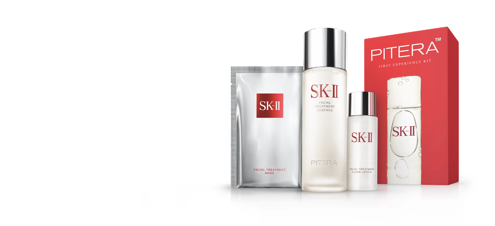
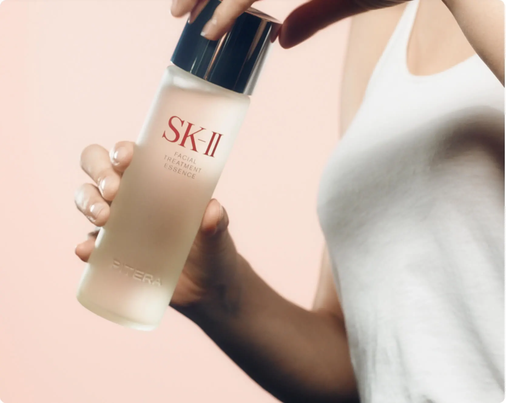
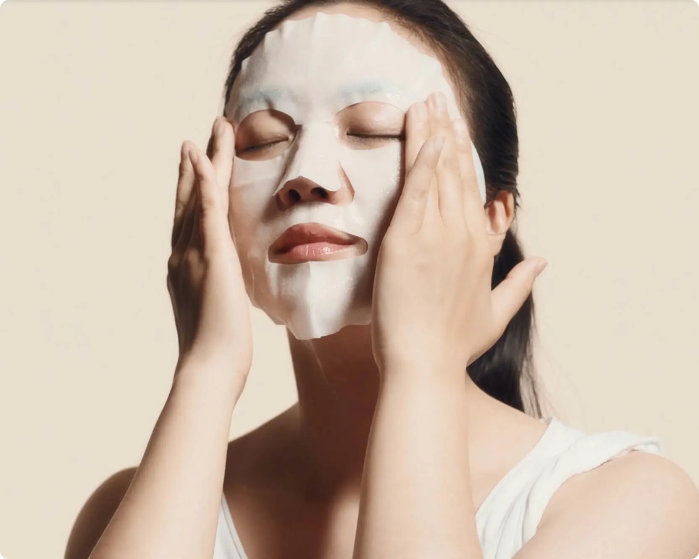
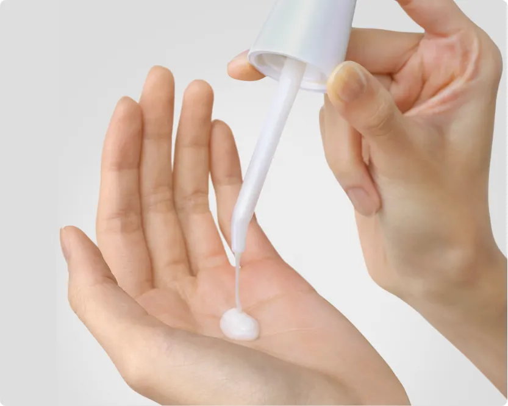
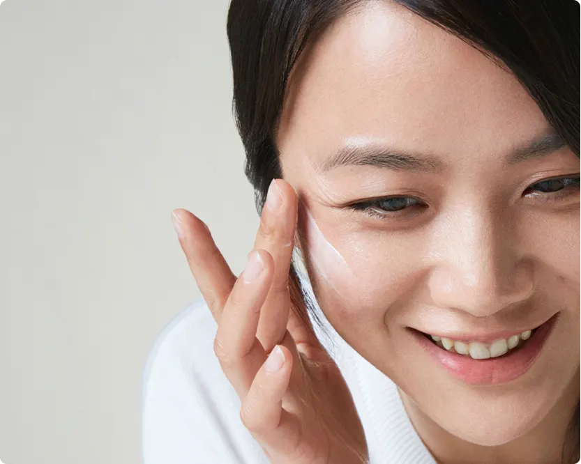
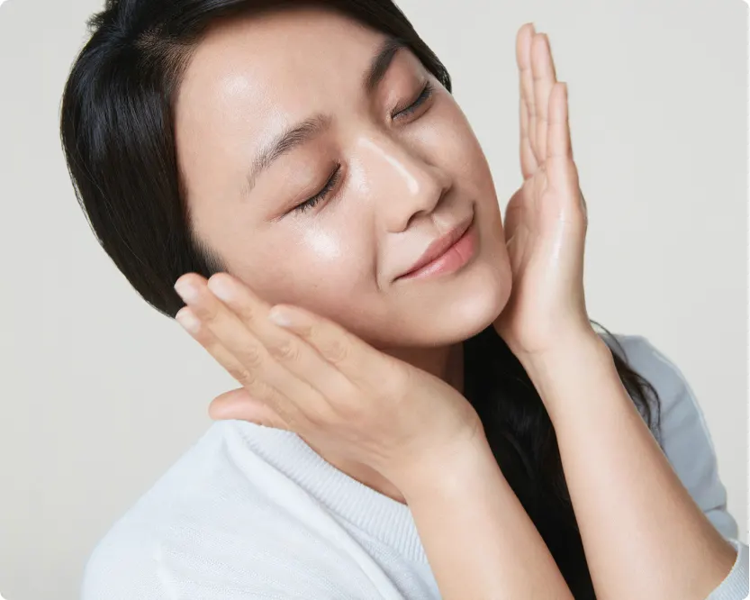

- pt.1
- pt.2
- pt.3
- pt.4
- pt.5
- pt.6

PITERA™의 강력한 효과를 경험해 보세요
키트 포함 제품
피테라TM 에센스
페이셜 트리트먼트 클리어 로션
페이셜 트리트먼트 마스크
새로운 스킨케어 루틴으로 맑고 투영한 피부로의 여정을 시작해보세요
사용방법

페이셜 트리트먼트 클리어 로션으로 피부를 깨끗하게 정돈해 줍니다.

페이셜 트리트먼트 마스크로 보습을 강화합니다.
페이셜 트리트먼트 에센스와 함께 28일만 지나면 맑고 투영한 피부로 변화합니다.
1.STEP
2.STEP
3.STEP
전 세계의 170만명이상의 여성들이 선택해 사용해온
맑고 투영한 피부를 위한 PITERA™


